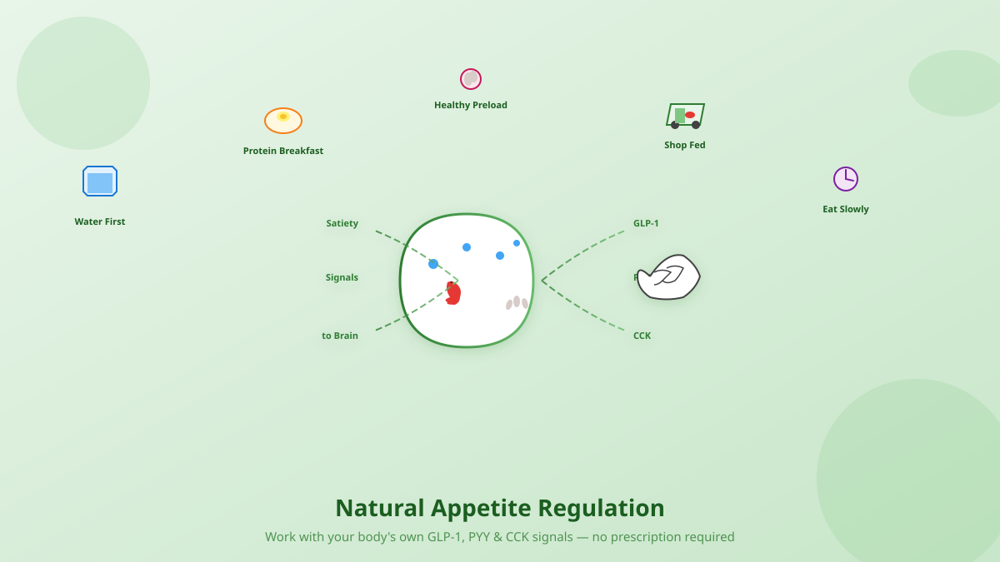

GLP-1 receptor agonists like semaglutide and tirzepatide have transformed obesity treatment. They work by mimicking glucagon-like peptide-1, a hormone your gut naturally releases after eating that signals fullness to the brain, slows stomach emptying, and regulates blood sugar. But at $1,000–$1,800 per month without insurance coverage, and with side effects ranging from nausea to muscle loss, they are not the right — or only — answer for everyone.

The problem: expensive, and outsourcing self-regulation
GLP-1 medications are powerful tools, but they are not magic. They work with your biology — not instead of it. When someone takes a GLP-1 for weight loss without addressing nutrition quality, movement, sleep, and stress, they risk losing muscle along with fat, developing nutrient deficiencies, and regaining weight when the medication stops. More subtly, relying entirely on a drug to regulate appetite can erode the very self-determination that sustains long-term health.
Your body already produces GLP-1, peptide YY (PYY), cholecystokinin (CCK), and other satiety hormones every time you eat. The strategies below are not "hacks" — they are ways to give your native physiology the conditions it needs to work well.
1. Drink water before meals — the simplest preload
Thirst and hunger share overlapping neural pathways. In older adults especially, thirst perception is blunted, so mild dehydration often masquerades as hunger. Randomized trials show that drinking 500 mL (about 16 oz) of water 20–30 minutes before a meal reduces calorie intake by 13–22% and leads to 44% greater weight loss over 12 weeks compared to a calorie-matched diet alone [¹][²]. The mechanism is straightforward: water fills the stomach, activating stretch receptors that signal fullness via the vagus nerve before food even arrives.
Practical tip: Keep a 16-oz glass or bottle at your kitchen counter. Drink it while you prep dinner or wait for your takeout order. Cold water may have a modest thermogenic bonus, but the volume effect matters most.
2. Eat breakfast — but make it protein-rich
The breakfast debate is nuanced. A 2019 BMJ meta-analysis of randomized trials found that adding breakfast increased daily calorie intake by ~260 kcal and did not favor weight loss in the short term [³]. However, large observational studies consistently link skipping breakfast with higher BMI and 11–48% greater odds of overweight/obesity [⁴][⁵]. The difference? Breakfast quality. A sugary pastry spikes insulin and drives mid-morning hunger. A protein-rich breakfast (eggs, Greek yogurt, cottage cheese, tofu scramble) increases GLP-1 and PYY, reduces ghrelin, and improves satiety through the afternoon [⁶].
Practical tip: Aim for 25–35 g of protein at breakfast. This single habit sets the hormonal tone for the day and reduces reactive snacking.
3. Avoid prolonged fasting that triggers compensatory overeating
Extended fasting or skipping meals creates an energy deficit that the body defends aggressively. A 2021 controlled study found that a 24-hour energy deficit created by fasting — but not an equivalent deficit from exercise — increased hunger, food reward, and subsequent ad libitum intake by ~30% [⁷]. The body senses dietary restriction as a threat and ramps up ghrelin and reward-circuit sensitivity. This is why "ruining your appetite" with a healthy snack before a high-calorie situation can be smarter than arriving ravenous.
4. "Deliberately ruin your appetite" with strategic preloading
Your mother told you not to spoil your dinner. Research says you should — but with the right foods. This is called preloading: consuming a low-calorie, high-satiety food 20–30 minutes before a main meal to activate gut hormones early. Almonds (20 g, ~115 kcal) eaten before meals significantly improved glycemic control and reduced hunger in prediabetic adults over 3 months [⁸]. Greek yogurt preloads increased postprandial GLP-1 and PYY more than calorie-matched peanut snacks in women with overweight [⁹]. The key is protein + fiber + healthy fat — the triad that maximally stimulates GLP-1, PYY, and CCK.
Practical preloads (100–150 kcal, 20–30 min before eating):
- 6–8 oz Greek yogurt (plain, nonfat or 2%)
- 15 almonds or walnuts + a small apple
- ½ cup cottage cheese with berries
- 1 hard-boiled egg + raw veggies
- 2 tbsp hummus with cucumber slices
5. Never grocery shop hungry — your brain prioritizes calories over nutrients
A JAMA Internal Medicine research letter demonstrated that hungry shoppers purchased more high-calorie foods and fewer nutrient-dense options compared to fed shoppers [¹⁰]. After an 18-hour fast, participants chose significantly more carbohydrates and cheese, and fewer low-calorie vegetables [¹¹]. Hunger shifts decision-making from prefrontal (planning, long-term goals) to limbic (immediate reward, calorie density). The grocery store is designed to exploit this: end-cap displays, checkout-line candy, bakery aromas.
Practical tip: Eat a protein-fiber snack before you leave the house. Shop with a list. Stick to the perimeter first (produce, meat, dairy). Avoid the center aisles until your cart has the essentials.
6. Eat slowly — give your hormones time to catch up
It takes ~20 minutes for GLP-1, PYY, and CCK to peak after eating begins. A landmark 2010 JCEM study found that eating the same meal over 30 minutes (vs. 5 minutes) produced significantly higher GLP-1 and PYY responses and greater fullness ratings [¹²]. Fast eating also increases bite size and total calories consumed. The "slow spaced eating" protocol (pausing between bites, putting utensils down) is now studied as a behavioral intervention for obesity phenotypes characterized by rapid gastric emptying or blunted satiety signaling [¹³].
Practical tip: Set a timer for 20 minutes at dinner. Put your fork down between bites. Chew 20–30 times per bite. No screens while eating.
7. Build meals that amplify your own GLP-1
Certain nutrients are potent GLP-1 secretagogues. Protein (especially whey, eggs, fish) stimulates GLP-1 via L-cells in the distal gut. Soluble fiber (oats, psyllium, beans, lentils) ferments to short-chain fatty acids that activate FFAR2/3 receptors on L-cells. Healthy fats (olive oil, avocado, nuts, fatty fish) delay gastric emptying and enhance CCK. Bitter compounds (arugula, dandelion greens, kale) may activate intestinal taste receptors that boost gut hormone release [¹⁴]. Resistant starch (cooled potatoes, green bananas, legumes) feeds the microbiome that supports GLP-1 production.
Meal template for maximal satiety: 30–40 g protein + 10–15 g fiber + 15–25 g healthy fat + 2 cups non-starchy vegetables. Example: grilled salmon, roasted broccoli with olive oil, quinoa, mixed greens with walnuts and vinaigrette.
8. Sleep and stress: the silent appetite disruptors
One night of sleep restriction (<6 hours) increases ghrelin, decreases leptin, and impairs prefrontal regulation of food choices [¹⁵]. Chronic stress elevates cortisol, which drives visceral fat storage and cravings for high-fat, high-sugar foods. No preloading strategy can outpace chronic sleep debt or unmanaged stress. If you are doing the habits above and still struggling, look here first.
References
- Davy BM, Dennis EA, Dengo AL, et al. Water consumption reduces energy intake at a breakfast meal in obese older adults. Obesity (Silver Spring). 2008;16(2):285-291.
- Parretti HM, Aveyard P, Blannin A, et al. Efficacy of water preloading before main meals as a strategy for weight loss in primary care patients with obesity: RCT. Obesity (Silver Spring). 2015;23(9):1780-1786.
- Sievert K, Hussain SM, Page MJ, et al. Effect of breakfast on weight and energy intake: systematic review and meta-analysis of randomised controlled trials. BMJ. 2019;364:l42.
- Ma X, Chen Q, Pu Y, et al. Skipping breakfast is associated with overweight and obesity: A systematic review and meta-analysis. Obes Res Clin Pract. 2020;14(1):1-8.
- Yamamoto R, Tomi R, Shinzawa M, et al. Associations of skipping breakfast, lunch, and dinner with weight gain and overweight/obesity in university students. Nutrients. 2021;13(1):271.
- Clayton DJ, James LJ. The effect of breakfast composition on appetite and energy intake in overweight/obese adults. Appetite. 2018;120:564-572.
- Hubert P, King NA, Blundell JE. Energy depletion by 24-h fast leads to compensatory appetite responses compared with matched energy depletion by exercise. Br J Nutr. 2021;126(5):725-735.
- Misra A, Gulati S, et al. Effects of almond consumption on glycemic control in Asian Indians with prediabetes. Front Nutr. 2022;9:918234.
- Al-Bayyari N, Alhameedy M, Omoush R, Ghazzawi H. Exploring effects of high protein versus high fat snacks on satiety, gut hormones and insulin secretion. Obes Pillars. 2025;16:100212.
- Tal A, Wansink B. Fattening fasting: hungry grocery shoppers buy more calories, but not more food. JAMA Intern Med. 2013;173(12):1146-1147.
- Lunn TE, et al. Hunger and shopping: an 18-hour fast increases high-calorie food choices. Citizen.org. 2012.
- Kokkinos A, le Roux CW, Alexiadou K, et al. Eating slowly increases the postprandial response of the anorexigenic gut hormones, peptide YY and glucagon-like peptide-1. J Clin Endocrinol Metab. 2010;95(1):333-337.
- Zandvakili I, Pulaski M, Blakely O. A phenotypic approach to obesity treatment. Nutr Clin Pract. 2023;38(3):612-621.
- Bodnaruc AM, Prudhomme D, Blanchet R, et al. Nutritional modulation of endogenous glucagon-like peptide-1 secretion: a review. Nutr Metab (Lond). 2016;13:92.
- Spiegel K, Tasali E, Penev P, Van Cauter E. Brief communication: Sleep curtailment in healthy young men is associated with decreased leptin levels, elevated ghrelin levels, and increased hunger and appetite. Ann Intern Med. 2004;141(11):846-850.